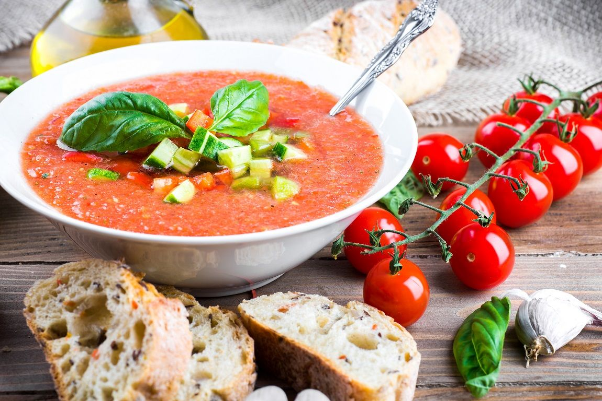

Gazpacho

Description
If you are not familiar with gazpacho, it is a chilled soup that originated in Andalucía, Spain. Traditional recipes call for tomatoes, cucumbers, bell peppers, garlic, olive oil, vinegar, and bread, which thickens the soup. Tomatoes, cucumber, and olive oil make up its vibrant red base, garlic adds bite, and red wine vinegar gives it a delicious tang. Complex, refreshing, and bursting with summer produce, it is the perfect thing to make hen the days are hot and fresh tomatoes are at their peak.
Ingredients
- 2 lbs ripe juicy tomatoes
- 1 garlic clove
- 1/2 onion, white type not sweet
- 1 green sweet pepper
- 1/4 teaspoon ground cumin
- 3 tablespoons red wine vinegar
- 1/2 tablespoon salt
- 1 cup virgin olive oil
- 1 piece rustic bread (3-4 inches long piece)
- 1 cup of garlic croutons
Steps
- Rinse well the tomatoes,take off the stems and cut them in a few pieces.
- Peel the garlic clove, the onion and the cucumber. Chop them in a few pieces.
- Rinse the pepper, get rid of any single seed, and chop coarsely.
- Place the piece of bread in a bowl with water in order to soak it. Once soaked, put all water away, squeeze the soaked bread with your bare hands as much as you can and set aside.
- In a good blender put the tomatoes, the garlic, onion, pepper, cucumber and squeezed bread. Add remaining ingredients and crush all up at the highest speed your machine can work. No temperature please! Go on until no minimum little piece of anything can be noticed when you try the gazpacho. It must be creamy and with some consistency, not watery like.
- Pour it in a jar or bowl and let it chill in your fridge. The chilliest the better. Do not freeze! Serve it in bowls with some croutons on top as a first course for any meal.
Tips
- Always try the cucumber before adding it. If it is sour, your gazpacho will be ruined.
- For the best results, use Spanish (from Spain, Europe) olive oil. Italian could suit, but believe me ours is much better, though not so well known.
- Keeps well in fridge for a week, guess it won't last you a day, so good it is!